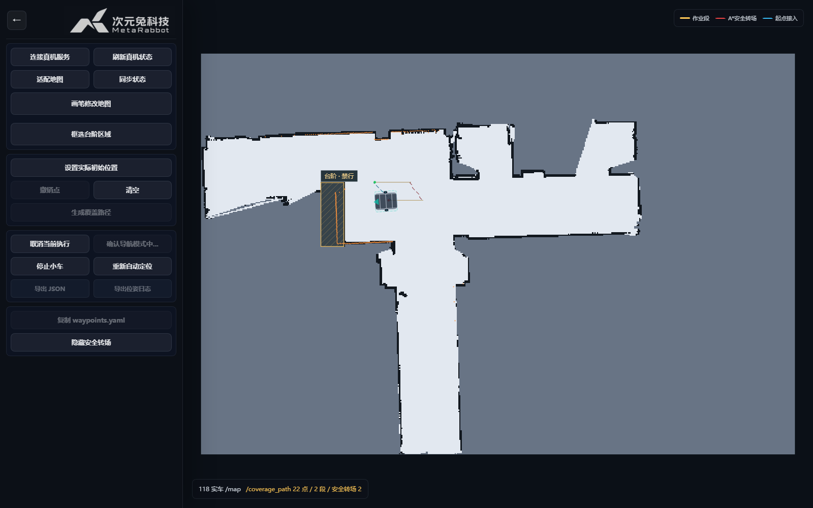

What It Does
项目做的是什么
- 硬件真正接起来：独立完成电路改造、供电和线束整理，集成轮毂驱动、清扫机构、LTME-02A 二维雷达及 IMU，并接入 ROS 2。
- 在地图上安排清扫：网页查看固定地图和机器人位置，设置实际初始位姿，绘制清扫区域及台阶禁行区，生成作业段和安全转场路径。
- 把路径交给实车执行：通过 Nav2、速度平滑、碰撞监测和底盘状态门禁执行任务，支持启动、取消、停止及日志导出。
VLN Relation
和当前 VLN 主线的关系
这台车提供清扫场景中的地图、定位和任务执行基础，未来可承接“清扫这一块区域”等语言任务。目前本页展示的是人工框选区域后的覆盖清扫流程，语言理解与自主任务分解仍是后续方向。
Craft Record
从布线到代码，再到现场排查
V1.0 主要验证部件布局和底盘原型，V2.0 将供电、驱动、传感器和清扫机构收拢到整车上，并基于 ROS 2 / Nav2 实现项目应用。近期工作集中在转弯时扫描与位姿的时间对应、重定位、Costmap 扫描供给，以及网页到执行器的任务状态一致性。硬件照片、控制台截图和失败记录共同保留了这段迭代过程。
Media
关键画面


Web Console
在同一张地图上完成清扫操作
进入控制台后，先确认实际位置，再绘制区域、生成覆盖路径并启动任务。网页还提供地图画笔、台阶区域编辑和重新定位入口；进入页面或生成路径本身不会让车辆开始运动。

- 定位链路：轮速与 IMU 提供运动估计，AMCL 与地图匹配，TF 连接地图、里程计、车体和雷达坐标系。
- 路径链路：区域与禁行约束进入覆盖规划，输出作业段和转场连接，再交给 Nav2 执行。
- 运动链路：导航速度经过速度平滑、碰撞监测和底盘允许状态检查，最后到达 CAN 驱动；停止与取消仍保留原有安全链路。
Field Test
实车现场与覆盖控制台
Engineering Notes
最近重点解决了哪些问题
- 转弯时墙上的激光点错位：排查扫描内各束激光的采样时间与转动角速度，修正旋转补偿方向；限制转速，并拒绝缺少有效位姿依据的显示帧。网页过滤与物理定位效果分开判断。
- 重定位后状态不一致：围绕实际初始位姿、AMCL、动态 TF 和地图身份检查链路，避免仅凭网页图标变化就认定车辆定位已经恢复。
- 有地图却无法继续走：追查 Costmap 扫描缓冲、DDS 回调与节点运行状态，并检查底盘使能反馈和任务绑定；将失败原因留在验证记录中。
Validation Record
记录完成，也保留失败
2026-11-05 的实车记录覆盖 R101–R146，共 46 次尝试、39 次完成、7 次失败，最长连续完成 22 次。完成轮次的行驶距离约为 3.35–5.01 米；这些结果对应当时地图、路线和配置。
失败记录包括 6 次路径无进展或扫描供给相关异常、1 次底盘就绪检查失败。显示链路会过滤部分不可信激光点，因此画面中的越界点为零不能等同于物理定位误差为零，也不能据此保证任意场地或任意路线都能完成。
README Snapshot
README / 项目说明片段
RabbitRobot_Sweeper V2.0
时间：2026.11 · 定位：固定地图下的实车覆盖清扫平台。
从原型到工程基线
保留 V1.0 硬件原型档案，V2.0 展示整车改造、二维雷达定位、区域覆盖、Web 操作和现场验证。ROS 与 Web 分别管理，源码分支名沿用 baseline/sweeper-real-v1-ros 和 baseline/sweeper-real-v1-web。
关键入口
ljh_robot_coverage：区域输入、覆盖路径与执行链路。start_clean_console.sh：车端统一控制台启动入口，默认驻车、不启动清扫刷。- Web 控制台：地图、实际位姿、区域编辑、任务操作及日志导出。
工程说明和现场证据按各自范围解读；本展示页更新没有新增实车测试。